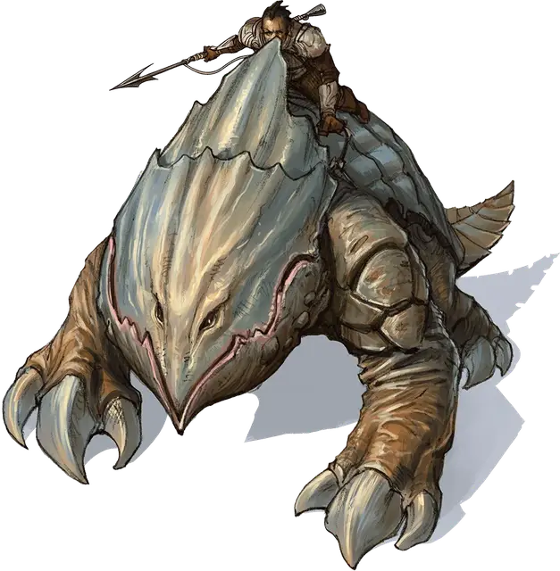

Подземная акула
Burrowshark
Средний Гуманоид (Человек), нейтрально-злой

Класс Доспеха 18 (латы)
Хиты 82 (11к8 + 33)
Скорость 30 футов
| мод | спас | ||
|---|---|---|---|
| СИЛ | 18 | +4 | +4 |
| ЛОВ | 12 | +1 | +1 |
| ТЕЛ | 16 | +3 | +3 |
| мод | спас | ||
|---|---|---|---|
| ИНТ | 10 | +0 | +0 |
| МДР | 11 | +0 | +0 |
| ХАР | 13 | +1 | +1 |
Навыки Атлетика +6, Восприятие +2, Запугивание +3, Уход за животными +2
Чувства пассивное Восприятие 12
Языки Общий
Опасность 4 (1100 опыта)
Бонус мастерства +2
Особенности
Узы Чёрной Земли. Подземная акула имеет магическую связь со своей прирученной ездовой панцирницей. Когда подземная акула находится верхом на своей панцирнице, она разделяет её восприятие и может ехать на ней, когда та зарывается в землю. Привязанная таким образом панцирница подчиняется командам подземной акулы. Если её панцирница умирает, подземная акула может обучить новую за один месяц.
Действия
Мультиатака. Подземная акула совершает три рукопашные атаки.
Копьё. Рукопашная или дальнобойная атака оружием: +6 к попаданию, досягаемость 5 фт. или дистанция 20/60 фт., одна цель. Попадание: колющий урон 7 (1к6 + 4) или колющий урон 8 (1к8 + 4) при использовании оружия двумя руками в рукопашной атаке.
Реакции
Непоколебимость. Когда на подземную акулу воздействует эффект, который должен передвинуть её, сбить с ног или сделать и то, и другое, она может использовать реакцию, чтобы не двигаться и устоять на ногах.
Описание
Подземные акулы — это элитные воины культа земли, свирепость которых не знает себе равных.
Они врываются в бой верхом на своих ездовых панцирницах, а затем, пока эти могучие создания разрывают врагов на куски, спрыгивают на землю и безжалостно уничтожают противников.
Подземные акулы весьма напоминают стражей Чёрной Земли, так как оба этих рода войск имеют сверхъестественные способности, позволяющие им оставаться на ногах даже после самых тяжёлых ударов, и носят особые доспехи. В дополнение к этим преимуществам Огремох даровал подземным акулам возможность устанавливать магическую связь с панцирницами, позволяя всаднику зарываться в землю вместе со своим скакуном и чувствовать то же, что и его скакун.